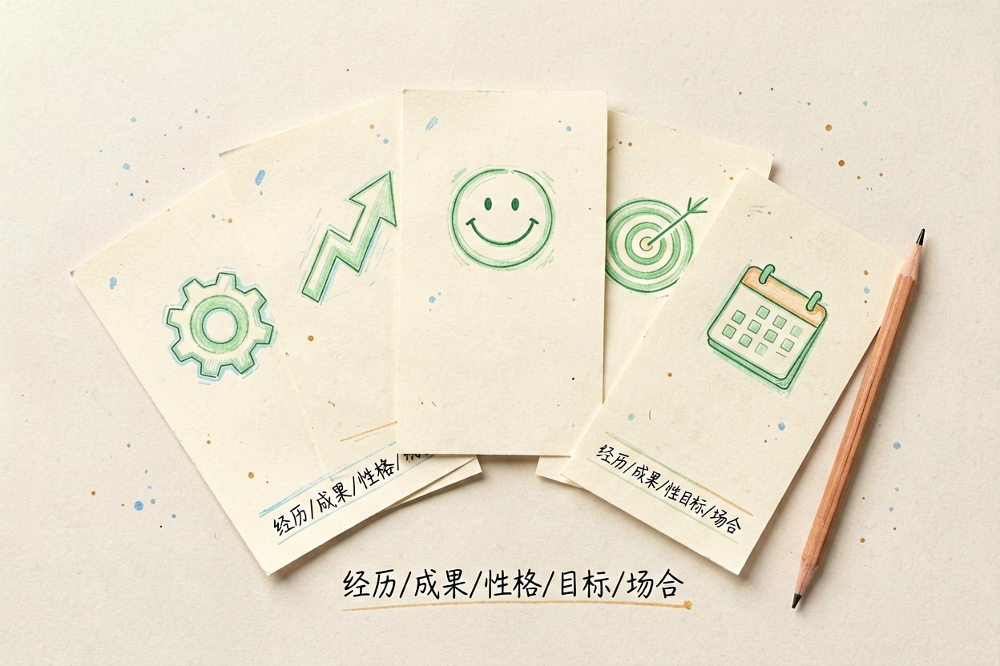
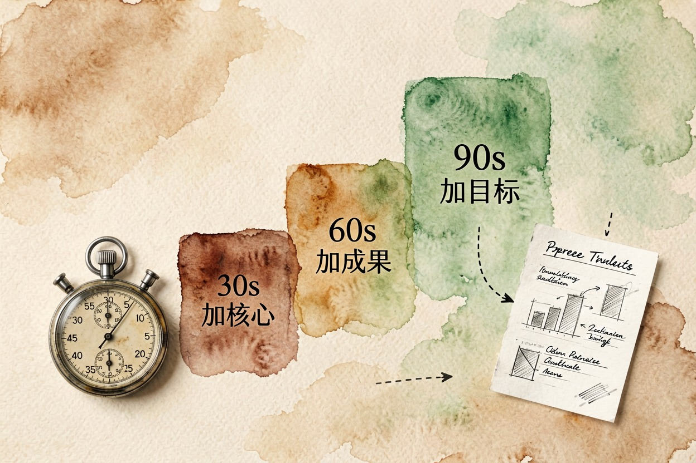
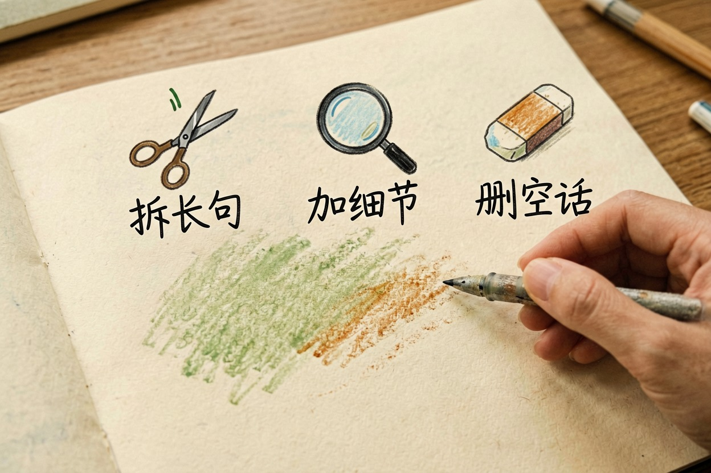
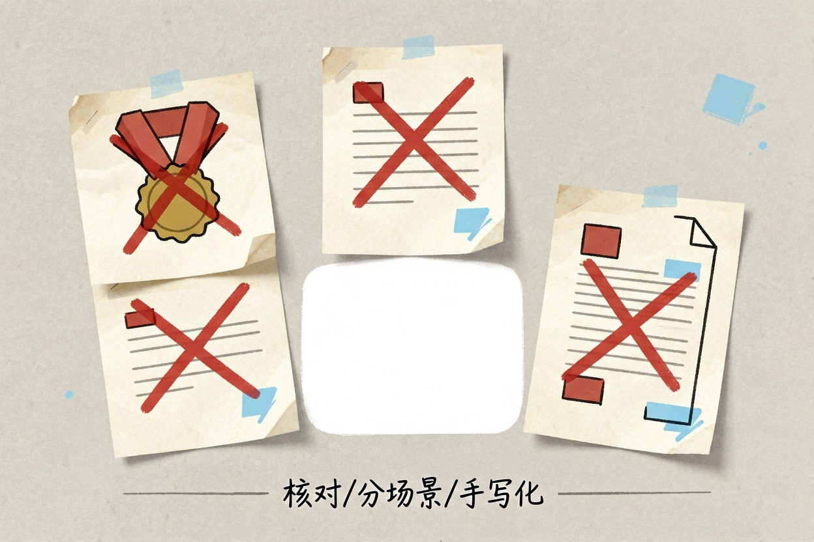
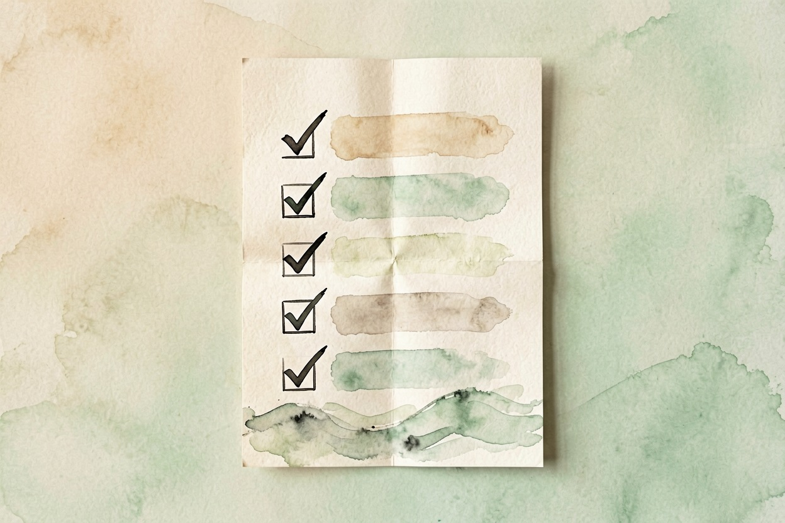

用 AI 写自我介绍：三个版本模板
阿凯让 AI 写了段自我介绍，念给同事听，同事愣了半天问：你什么时候成了常春藤毕业生？
用 ai写自我介绍，先收集五类真实素材

用 AI 写自我介绍，最容易翻车的做法是直接说「帮我写个自我介绍」。AI 没有你的经历，会自己编。先收集五类真实素材再动笔：
- 经历：做过什么工作、做过什么项目，一条一条列。
- 成果：带数字的，比如「三个月把转化率提高了 20%」。
- 性格：别人怎么评价你，一两句就够。
- 目标：你想在这段关系里达成什么。
- 场合：给谁听、多长时间、什么场合。
素材越具体，AI 写出来的越像你。想系统学提示词怎么写，看AI 提示词怎么写。
面试版：30 秒、60 秒、90 秒怎么取舍

面试自我介绍的长度由现场决定。30 秒只说「我是谁、做过什么、为什么合适」；60 秒加一段最亮的成果；90 秒再加职业目标和一句独特卖点。参考目标岗位的招聘描述，能帮你对齐对方要什么，智联招聘和BOSS 直聘上都能看到真实岗位要求。
把素材填进这段模板：
我是一名有 X 年经验的<岗位>，最近三年在<行业>做<方向>。
最有代表性的一件事：<数字+成果>，它让我学会了<能力>。
接下来我希望在<目标公司>继续做<方向>，因为我特别认同<对方价值观>。
请把上面内容改写成 30 秒、60 秒、90 秒三个版本，
语气自然口语化，不要出现夸张形容词。拿到三版后，先试读，哪版顺嘴用哪版。
做运营的周姐第一次让 AI 写，拿到的是三段都能念完、但都没记忆点的稿子；她补上「上季度把复购率拉高 12%」这句带数字的成果，第二版明显不一样。
社交版与学生版：两个场景的写法差异
社交场合的自我介绍要短、要有记忆点，一开口先说「你和别人有什么不同」，而不是罗列经历。学生版则要突出「我做过什么、我想学什么」，经历不够就用项目、社团和自学的成果顶上。
场合：线下行业聚会，每人 30 秒。
请用第一人称写一段口语版自我介绍，突出一个记忆点，
不要简历腔，不要堆形容词，结尾留一句好接话的问题。学生把「经历」替换成「课程项目、实习、自学成果」即可。学生版的另一个重点是诚实：社团经历就写社团经历，别把「参加了一次活动」包装成「负责整个项目」。想模拟面试把版本练熟，看用 AI 模拟面试的三轮练习法。
生成后 10 分钟人工改什么

AI 稿直接念会有一股「AI 味」，花十分钟做三件事：
- 拆长句。超过 30 个字的句子拆成两句。
- 加细节。把「有领导力」换成你带过的那个具体项目。
- 删空话。去掉「吃苦耐劳」「追求卓越」这类谁都能说的话。
改完再念一遍，听到哪里卡壳就改哪里。念不顺的自我介绍，观众大概率也记不住。
更系统的改写清单，看去掉 AI 味的改写方法。
三个反例与红线

三条红线必须记牢：别编经历，AI 会自行补充你没写过的荣誉和学校，逐条核对每一句；别一份稿打天下，面试、社交、学生三版各说各话；别把 AI 稿直接贴进简历，简历要的是你自己的版本。
想从自我介绍延伸到整份简历，看用 AI 优化简历。所有工具汇总在AI 工具导航。
用 AI 写自我介绍，本质是「你出素材、AI 出草稿、你再改成人话」。三版都试一遍、朗读一遍，你会明显感觉比第一稿更像自己。

本文信息核对于 2026-08-06。AI 产品的价格、免费额度与功能变动频繁，实际以各工具官网当前说明为准。